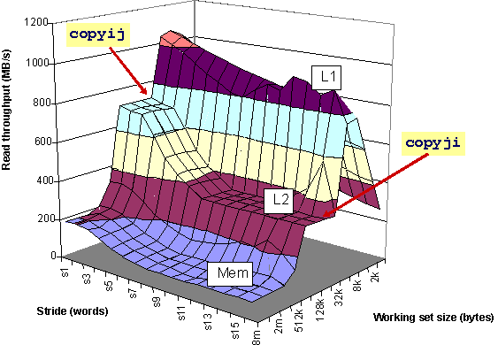

A Programmer's Perspective
Randal E. Bryant and David R. O'Hallaron
Most books on systems---computer architecture, compilers, operating
systems, and networking---are written as if the reader were going to
design and implement such a system. We call this the ``builder's
persepective.'' We believe that students should first learn about
systems in terms of how they affect the behavior and performance of
their programs---a "programmer's perspective.''
Here are some simple examples showing the contrast between the two
perspectives:
Computer Arithmetic
Logic design and computer architecture courses describe how to
implement fast and efficient arithmetic circuits.
For programmers, what really matters is how the finite word
sizes used to represent integer and floating point data determines what values can be represented and the behavior of different operations.
For example, consider the following C function to compute the squares
of 5, 50, 500, 5000, 50000, 500000, and 5000000:
void show_squares()
{
int x;
for (x = 5; x <= 5000000; x*=10)
printf("x = %d x^2 = %d\n", x, x*x);
}
When run on a typical (32-bit) processor, this program produces the
following values:
x = 5 x^2 = 25
x = 50 x^2 = 2500
x = 500 x^2 = 250000
x = 5000 x^2 = 25000000
x = 50000 x^2 = -1794967296
x = 500000 x^2 = 891896832
x = 5000000 x^2 = -1004630016
The first four values are exactly what one would expect, but the last
three seem quite peculiar. We even see that the ``square'' of a
number can be negative!
In Chapter 2 we cover the two's complement number system used to
represent integers on most computers and its mathematical properties.
We also cover the IEEE floating point representation from a
programmer's perspective.
Memory Systems
Computer architecture courses spend considerable time describing the
nuances of designing a high performance memory system. They discuss
such choices as write through vs. write back, direct mapped vs. set
associative, cache sizing, indexing, etc. The presentation usually
assumes that the designer has no control over the programs that are run
and so the
only choice is to try to match the memory system to needs of a set of benchmark
programs.
For most people, the situation is just the opposite. Programmers have
no control over their machine's memory organization, but they can
rewrite their programs to greatly improve performance. Consider the
following two functions to copy a 2048 X 2048 integer array:
void copyij(int src[2048][2048], int dst[2048][2048])
{
int i,j;
for (i = 0; i < 2048; i++)
for (j = 0; j < 2048; j++)
dst[i][j] = src[i][j];
}
void copyji(int src[2048][2048], int dst[2048][2048])
{
int i,j;
for (j = 0; j < 2048; j++)
for (i = 0; i < 2048; i++)
dst[i][j] = src[i][j];
}
These programs have identical behavior. They differ only in the order
in which the loops are nested. When run on a 2 GHz Pentium 4,
copyij runs in 30 milliseconds, whereas copyji
requires 639---more than 20 times slower! Due to the ordering of
memory accesses, copyij makes much better use of the cache
memory system.

The performance of a memory system can be visualized by the memory
mountain shown above, characterizing the speed at which memory
can be read based on the data access pattern. As is indicated,
function copyij operates near the peak of the memory
system, while copyji operates in a valley. We use this
mountain as the logo of our book, since it so clearly illustrates our
goal of understanding how the system design affects program behavior
and performance.
In Chapter 6, we describe the memory hierarchy and how it affects
program performance. We describe programming techniques such as
blocking, that greatly enhance the locality of memory accesses,
yielding high performance even on large data sets.
Operating Systems
Courses in operating systems cover the design of the components of an
operating system---scheduler, memory manager, file system, etc. Only
a small fraction of programmers ever write this kind of code, though.
On the other hand, they can access many features of the OS using
system calls such as fork, wait,
exec, etc. This level of programming is not generally
covered in any course. In Chapter 8, we describe process management,
and how programmers can make use of the process control features of
Unix and Linux.
Other Topics
We cover a wide range of systems topics, all from a programmer's
perspective. Besides those mentioned above, these include
machine-level programming, optimizing compilers, processor
architecture, linking, performance measurement, virtual memory, I/O,
network programming and concurrency. In viewing what to cover about a
subject and how to present it, we have used the filter ``How could a
sophisticated application programmer make use of this material?''
Key Points
-
The material in this book has direct value for programmers. Students
find that it explains many of the mysterious problems they've already
encountered, that it helps them write and debug code more efficiently,
and that their programs are more reliable and efficient. Even if this is
the only systems course they ever take, they will have achieved
a higher level of competence than many entry-level programmers.
-
The material in this book is unique. Much of it is not presented in
any other book or taught in previous courses. Instead, a traditional
coverage of systems requires programmers to figure out on their own
how the characteristics of the systems they study in builder-centric
courses can be exploited to improve their programs. Programmers must
struggle through confusing Unix man pages or read advanced systems
programming books just to use the simple process control functions
provided by Unix.
-
The book provides a solid foundation for builder-centric courses. We
believe that more advanced systems courses should present
systems from a builder's perspective. Students will be much better
oriented to the needs and constraints of these systems by first
studying them from a programmer's perspective.
Randy Bryant and Dave O'Hallaron
Last modified: Sun Apr 6 20:38:27 EDT 2003